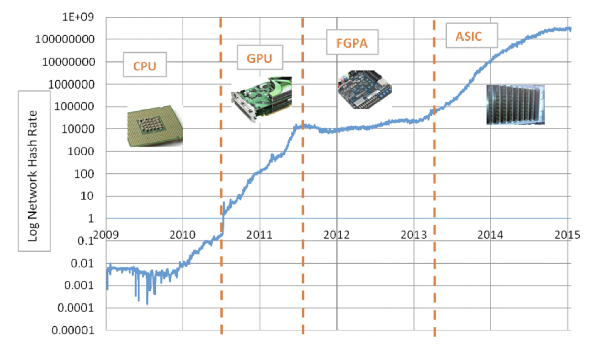

20221123 - Acceleration of Neural Network
Acceleration?
Evolution of Bitcoin miner
x100000000 improvement if just five years!

Evolution of Bitcoin miner
From 2009, the amount of hashing power in the Bitcoin network has grown exponentially
- 2009: the miners hashing 8 million times per second
- 2010: 116,000 million times per second
- 2014: 10,000,000,000 million times per second
It is mostly done by the competition in the hardware used in the network because the SHA-256 algorithm is hard to be accelerate in SW.
- 2010: CPU → GPU
- 2011: GPU → FPGA
- 2013: FPGA → ASIC
How to make NN fast?
Optimize network
- USe of better filter set
- Topology pruning: edges, nodes, depths
Use of batter mathcine
- GPU, TPU, VLIW, etc…
Operations in CNN

terms
N - Number of input fmaps/output fmaps (batch size)
C - Number of 2-D input fmaps/filters (channels)
H - Height of input fmap (activations)
W - Width of input fmap (activations)
R - Height of 2-D filter (Weights)
S - Width of 2-D filter (weights)
M - Number of 2-D output fmaps (channels)
E - Height of output fmap (activations)
F - Width of output fmap (activations)
Activation function
Input - input FMAP, filter weight
Output - output FMAP

Simple implementation of CONV layer with 7 loop layers

What should be accelerated?

Computational acceleration
Memory access consumes order of magnitude higher resources compared to the computation.
But, anyhow, 90% of computation is occupied by convolution
- Convolution is the sequence of Dot-Product (vector matrix multiplication)
- How to accelerate the dot-product?
Performance metrics
CPI - Cycles per instruction (clock cycles per instruction, clocks per instruction, or CPI) is one aspect of a processor’s performance
- The average number of clock cycles per instruction for a program or program fragment
It is the multiplicative inverse of instructions per cycle (IPC)
MIPS - Million instructions per second

Discussion
How can CPI value be smaller than 1.00?
- Effect of pipeline
Why does “Branch (BL)” instruction has 1.00 CPI value?
- Result of a stall in pipeline

Examples